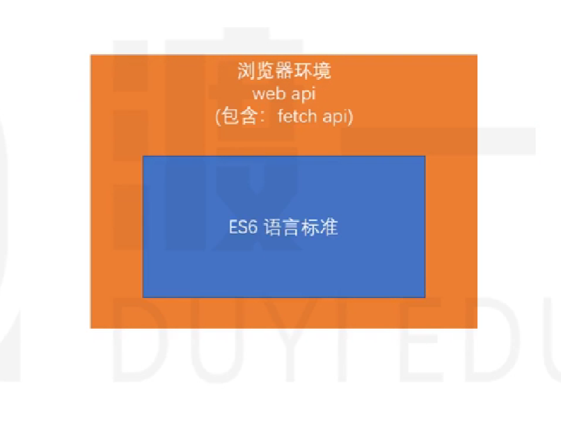

开箱即用
开箱即用(out of box): 你不需要做任何额外的配置就可以使用 vite 来帮你处理构建工作
web api
浏览器环境统称 web api

js 术语
数据
js 的本质是处理数据
js 提供了三种方式去描述数据
- 变量（存放在内存中）
- 字面量（直接书写的数据叫字面量）
let a = 1;
a是变量
1是字面量
- 表达式
这就是个表达式
1+2
程序中任何需要数据的地方，都可以使用上面任意一种数据表达。
标识符
程序中有些可以自行命名的地方，称之为标识符
常见的标识符有：变量名、函数名、参数名
纯函数
纯函数:只要参数不变，返回值一定不变 这个可以做缓存
函数副作用
函数副作用:我调用一次与两次结果是一样的，不影响别的东西
静态语言与动态语言
静态语言（强类型语言）。在编译时确定变量的数据类型，这意味着在使用变量之前必须声明其数据类型。静态语言的优势在于它们提供了严格的编程环境，可以预防类型相关的错误，并且在编译阶段可以进行类型匹配检查，这有助于提高代码的可靠性和效率。静态语言通常用于开发大型商业系统，因为它们的类型强制声明可以减少第三方开发包对代码的潜在侵害。
动态语言（弱类型语言）。在运行时确定数据类型，使用动态语言时，变量在使用前不需要声明数据类型，通常，变量的类型是由它所赋的值决定的。动态语言的主要优势在于它们提供了更高的编程灵活性，使开发人员可以更容易地应对变化，动态语言特别适合于需要快速开发和适应变化的领域，如网页应用程序开发。
元数据
描述数据的数据
hash 算法
能将内容转化成一个固定长度的字符串，内容不变，加密结果不变，内容一变，加密结果千差万别
编程范式
命令式编程：告诉计算机怎么做（How），我们需要给计算机指明每一个步骤
面向过程
面向对象
声明式编程：告诉计算机我要什么（What）
函数式编程
PRD
通常是指产品需求文档（Product Requirement Document）。